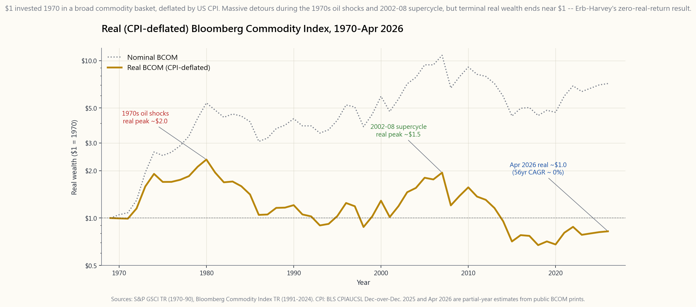
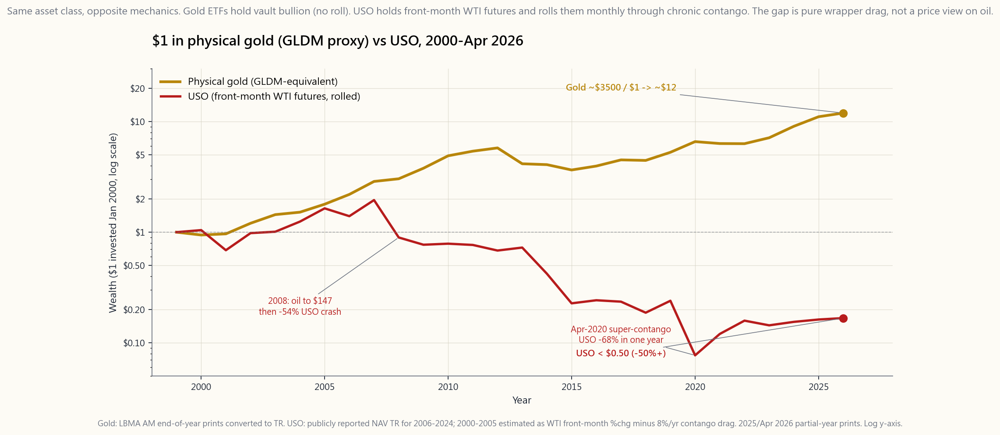

Side Lesson 22: Commodities — Gold, Oil, Agriculture as Portfolio Diversifiers
1. Why This Is Important
Commodities are the only asset class that the rest of finance is *priced off*. Bonds discount expected inflation; stocks discount future earnings that ride on input costs; currencies adjust to terms of trade. Yet ask a typical retail portfolio for its "commodities sleeve" and the answer is usually a confused mix of GLD, an energy ETF, and the suspicion that "it didn't work in 2024." The reason is that commodities, as a financial exposure, behave nothing like the underlying physical goods most people imagine they are buying.
Four reasons this lesson exists as its own slot rather than a paragraph under the inflation chapter (Side 06):
UNG, DBC, PDBC and the entire BCOM-tracking ecosystem hold futures, roll them quarterly, and bleed the contango term-structure. From 2009 to 2020 USO lost about half its value while WTI front-month was essentially flat. The instrument is not the commodity.
GLDM/IAU/GLD hold physical bullion in a vault — no roll, no decay, pure spot exposure. Gold is a store of value because collective belief makes it one; oil is industrial input that decays in your portfolio whether or not you believe in it.
negative.** Erb-Harvey (2006) and twenty years of follow-up work put the real geometric return of the Bloomberg Commodity Index at approximately zero over multi-decade windows. The diversification argument is real; the long-run return premium is not.
Oil 1973, agriculture 2007, energy 2022. Outside those windows commodities are dead weight. If your sizing rule does not account for the regime-conditional payoff, you will hold them for the wrong reasons and trim them at the wrong time.
The goal of this lesson is to make the spot-vs-futures distinction mechanical, calibrate the long-run real-return number, and produce a sizing rule that lets a four-tranche portfolio carry commodities without expecting them to be a quiet contributor.

2. What You Need to Know
2.1 The Four Sectors and What Drives Each
Index providers split commodities into **energy, metals, agriculture, and livestock**. The standard Bloomberg Commodity Index (BCOM, April 2026 weights) is roughly 28% energy, 38% metals (split 17% precious / 21% industrial), 31% agriculture, and 3% livestock. The S&P GSCI tilts much heavier into energy (~55%); the difference matters because GSCI returns are dominated by oil while BCOM is closer to a balanced basket.
Each sector responds to a different driver. Energy is set by OPEC+ production discipline, US shale capex, transportation demand, and geopolitical supply shocks (1973 embargo, 1990 Gulf War, 2022 Ukraine). Industrial metals — copper, aluminium, zinc, nickel — track the global manufacturing PMI and Chinese fixed-asset investment, which is why "Dr Copper" leads the cycle by six to nine months. **Precious metals** — gold and silver — track real interest rates and central-bank demand; they barely correlate with industrial activity. Agriculture — corn, wheat, soybeans, sugar, cotton, coffee — is dominated by weather, planting decisions, and biofuel mandates; supply shocks are sharp and short. Livestock is the smallest and most idiosyncratic, driven by feed costs and disease cycles.
The diversification within commodities is real: in 2022, energy returned +35%, industrial metals -10%, precious metals near flat, agriculture +12%, livestock +9%. A broad basket smooths these out; single-sector ETFs do not. That same dispersion is, separately, one of the cleanest sector-rotation signatures the market gives away for free — when energy and industrial metals are pulling apart by forty points in a single year, the macro thesis underneath is loud enough to trade off, and rotation is one of the few alpha sources I trust over decades.
2.2 Spot vs Futures: The Mechanism Most Investors Get Wrong
When you buy XOM stock you own a share of an oil company. When you buy USO you do not own oil — you own a basket of front-month WTI futures contracts that the fund rolls every month into the next contract. Each roll is a sale of the expiring contract and a purchase of the next one, executed mechanically.
If the futures curve is in contango (next contract priced higher than front), the fund sells low and buys high every roll, and the position bleeds at the rate of the contango spread. If the curve is in backwardation (next priced lower than front), the fund collects a positive roll yield. Industrial commodities with high storage costs (natural gas, oil during gluts) live in chronic contango. Soft and crisis commodities (oil during embargoes, agricultural products during drought) flip into backwardation.
The historical drag on USO from contango alone is about -6% to -9% per year averaged over 2009-2020. Front-month WTI started 2009 near $42 and ended 2020 near $48 — essentially flat. USO over the same window lost roughly half its NAV. The investor was right about oil and lost money anyway. (Week 39 covers the term-structure mechanics in detail; this side lesson borrows the result.)
The clean way to express commodity views without roll drag is to use equity proxies: XOM/CVX for oil, FCX for copper, NEM for gold miners, ADM/BG for agriculture. They carry equity beta and management risk in exchange for eliminating the futures bleed.
2.3 Gold vs Oil: Same Asset Class, Opposite Mechanics
Gold ETFs (GLDM 0.10% ER, IAU 0.25%, GLD 0.40%, SGOL 0.17%, BAR 0.175%) hold physical bullion in a vault. There is no futures contract, no roll, no contango. The fund's NAV tracks the spot price of gold less the expense ratio. From 2000 to April 2026 gold went from about $280 to roughly $3,500 — a wealth multiple in the 12x range, an annualised nominal return near 10%. Real return over the same window, net of CPI, is approximately 6-7% per year — anomalous by the long-run gold literature, driven by central-bank de-dollarisation buying since 2022.
Oil ETFs (USO, BNO, USL) hold futures. From 2000 to April 2026 USO delivered roughly negative one to two per cent per year — and remember WTI spot started near $25 in 2000 and is around $70 today, a 2.8x spot move erased by the roll. The same physical commodity expressed two different ways produces a 30x divergence in terminal wealth. The chart makes this concrete.

This is the single most important picture in the lesson. Two "commodities," same starting capital, opposite outcomes — entirely because of how the wrapper holds the underlying.
2.4 Broad-Basket ETFs: PDBC, DBC, BCI, GSG
For investors who do want a diversified commodity sleeve and accept the roll drag, the menu is:
- PDBC (Invesco Optimum Yield Diversified Commodity Strategy
- DBC (Invesco DB Commodity Index Tracking, 0.85% ER, K-1) — older,
- BCI (abrdn Bloomberg All Commodity Strategy, 0.25% ER, 1099) — the
- GSG (iShares S&P GSCI, 0.75% ER, K-1) — energy-heavy GSCI tracker.
- COMT, CMDY — niche alternatives.
2.5 The Erb-Harvey Result: Real Return ~ Zero
Claude Erb and Cam Harvey's 2006 paper "The Strategic and Tactical Value of Commodity Futures" decomposed commodity index returns into three pieces:
commodities have been flat to negative. Innovation, substitution, and improved extraction win against scarcity over long horizons.
metals) because contango is the structural shape; positive for non-storables in tight supply.
posted margin, which is a real rate of zero to one per cent.
Sum the three and the long-run real geometric return of a broad commodity index is approximately zero — and twenty years of out-of-sample data since the paper have confirmed it. BCOM's real return 1970 to April 2026 is approximately -0.5% per year. The diversification benefit is the entire reason to hold the asset class; the return premium is not.
This is why size matters. A 5-10% commodity sleeve in a 60/30/10 portfolio adds Sharpe-ratio and inflation-shock resilience without materially changing expected return. A 30% commodity sleeve drags expected return down by about 1.5% per year for marginal diversification. Gold is the special case inside this discipline — it earns its slot not as a return source but as the store-of-value tier, sized as part of the four-tranche stack rather than as part of the broad commodity basket. Two to five percent, no more, held alongside cash, short Treasuries, and (if you allow yourself) a smaller BTC sliver. The sizing is small on purpose: a store of value is not an alpha bet, it is the leg you do not want to look at when everything else is on fire.
2.6 The Supply-Shock Pattern
The historical pattern is consistent: commodities pay during *supply shocks, not during demand booms or steady-state inflation*.
- 1973 oil embargo: BCOM (proxy: GSCI back-cast) +75% in nominal
- 2007-2008 commodity supercycle: BCOM +30% in 2007, then -36% in
- 2021-2022 Ukraine + post-COVID supply chains: BCOM +27% in 2021,
The lesson is asymmetry: commodities are insurance, not income. They pay when nothing else does, and they cost a small premium during the long stretches between shocks.
In Horace's frame this is the vol-tail-wags-dog observation applied to a different time series. The mean experience of holding commodities is mild drag. The integral over the rare regime when they spike is what justifies the slot. Sizing rules:
- Broad basket (BCI or PDBC): 5-10% of portfolio.
- Gold (GLDM/IAU): 2-5% additionally as a separate store-of-value
- Single-commodity ETFs (USO, UNG, COPX): tactical only, position
3. Common Misconceptions
futures contract, rolled monthly. The decade-long contango drag from 2009-2020 cost holders roughly half their capital while spot WTI was approximately flat.
hedge. During the 2010s when CPI ran 1-2% on demand-side weakness, BCOM lost about 35% nominal. Inflation alone is not enough.
physical bullion (no roll, no decay). USO holds futures (continuous roll). The wrapper mechanics dominate the long-run return.
38% metals, 28% energy, 31% agriculture, 3% livestock. The correlation with CPI is regime-dependent — strongly positive during supply shocks, near zero in calm periods.
structures, but DBC, GSG, USO, and the older funds issue K-1 partnership forms. UBTI in IRAs becomes a real concern for K-1 issuers above $1,000 of UBTI.
commodities."* It is not. Producer stocks carry equity beta of roughly 1.0 to the market, plus the commodity exposure on top. The correlation of XOM to crude is about 0.55; the rest is general equity beta.
Harvey, and earlier Jacks (2013) reaching back to 1850, document that real commodity prices are flat to slightly negative over long horizons. Innovation and substitution offset scarcity.
is approximately the negative of its storage cost — which the ETF wrappers absorb into the expense ratio. Long-run real return to gold is roughly +1% per year, dominated by occasional re-pricing episodes.
4. Q&A Section
Q: What is the simplest commodity sleeve for a five-figure portfolio? A: Skip broad commodities entirely and hold 3-5% in GLDM. The diversification benefit of a broad basket at sub-$10k allocations is dominated by transaction costs and tracking error. Gold via GLDM is one decision, no K-1, and captures the store-of-value half of the case.
Q: Why is BCI preferred over DBC for the broad sleeve? A: BCI uses a 1099 structure (no K-1 paperwork) and has a 0.25% expense ratio vs DBC's 0.85%. Over 10 years that 0.6% ER difference compounds to ~6% of NAV for identical exposure.
Q: Should commodities live in the IRA or the taxable account? A: 1099 issuers (PDBC, BCI) are neutral. K-1 issuers should live in taxable to keep UBTI out of the IRA. Gold ETFs are taxed as collectibles at 28% federal LTCG when held in taxable — a meaningful penalty over the 15-20% rate on stocks. Prefer the IRA for gold ETFs.
Q: Does the 1973-style oil shock still work as a hedge in 2026? A: The mechanism is unchanged: a sudden physical-supply disruption puts the futures curve into backwardation and pushes spot prices higher. The US is now a net oil exporter, which mutes the equity damage from an oil spike compared to the 1970s but does not change the commodity payoff itself.
Q: Can I just hold the producers — XOM, FCX, NEM, ADM? A: You can, and the long-run returns are higher than the indexed basket. The trade-off is correlation: all four carry roughly 0.6-0.8 equity beta to the broad market, so during a recession they fall with stocks even when commodities themselves are bid. The producers are equity exposure with a commodity tilt, not a commodity hedge.
Q: Is the Bloomberg Commodity Index investable? A: Yes, via BCI, PDBC, COMT, and CMDY among others. None track BCOM exactly — each picks a slightly different roll methodology. PDBC explicitly optimises to minimise contango bleed; BCI tracks the mechanical schedule.
**Q: Does the Erb-Harvey "zero real return" result rule out commodity allocation?** A: No. It rules out expecting commodities to be a return source. The case for the sleeve is the diversification benefit during supply shocks (2008, 2022) and the rebalancing yield from holding an asset that is occasionally negatively correlated with stocks and bonds at the same time. Both effects are worth approximately 30-50bp of portfolio Sharpe ratio improvement.
Q: How does gold fit if BTC is the new digital store of value? A: They serve different niches in Tranche 3. Gold has 5,000 years of acceptance, deep central-bank demand, and zero protocol risk. BTC has 21M cap and roughly 70% volatility. Sizing rule: 2-5% gold and 1-3% BTC for the store-of-value sleeve, not one or the other. (Side 09 covers BTC sizing in detail.)
Q: What is the right rebalancing band for a 5% commodity sleeve? A: Rebalance to target whenever the sleeve drifts beyond ±2 percentage points of weight (i.e. 3% or 7%). This captures the supply-shock upside (sell into spikes) without churning during the dead-money years. Annual rebalancing alone misses too much of the spike.
**Q: Why are agricultural commodities barely covered in retail portfolios?** A: Because the retail wrapper menu is thin: WEAT, CORN, SOYB, JJG — all small-AUM, all single-commodity, all K-1. The cleanest expression of an agricultural view is an equity proxy (DE for ag equipment, ADM or BG for processing) or accept it as part of a broad-basket allocation through BCI or PDBC.
Q: Is the OPEC+ cartel still effective in setting oil prices? A: As of April 2026 the answer is "less so." US shale, with break-even costs near $50 WTI, sets the marginal supply curve. OPEC+ retains short-term market-management power but the long-run price floor is set by US producers. This compresses the upside of oil supply shocks relative to the 1970s.
附加課程 22：商品 — 黃金、石油、農產品作為投資組合分散工具
1. 為何這個課題重要
商品是唯一一個其他金融資產都以其為定價基礎的資產類別。債券折現預期通脹；股票折現建立在投入成本之上的未來盈利；貨幣則隨貿易條件調整。然而，若問一個典型散戶的投資組合其「商品配置」是什麼，答案通常是一堆混亂的組合——GLD、某隻能源交易所買賣基金，以及「2024年好像沒什麼用」的疑惑。原因在於，商品作為金融投資工具，其表現與大多數人想象中所購買的實物商品截然不同。
本課程獨立成章，而非只是通脹章節（附加課程 06）下的一段文字，有以下四個原因：
本課程的目標是讓現貨與期貨的區別變得清晰易懂，校準長期實際回報數字，並制定一套倉位規則，使四階段投資組合能夠持有商品，而不期望其成為穩定的貢獻者。
2. 你需要了解的內容
2.1 四大板塊及其驅動因素
指數供應商將商品劃分為能源、金屬、農產品及牲畜四大板塊。標準彭博商品指數（BCOM，2026年4月權重）的構成大致為：能源28%、金屬38%（其中貴金屬17%、工業金屬21%）、農產品31%、牲畜3%。標準普爾高盛商品指數（S&P GSCI）則大幅偏重能源（約55%）；這一差異至關重要，因為GSCI的回報主要由石油主導，而BCOM則更接近均衡的籃子。
每個板塊受不同因素驅動。能源取決於歐佩克+（OPEC+）的產量紀律、美國頁岩油資本開支、運輸需求以及地緣政治供應衝擊（1973年石油禁運、1990年海灣戰爭、2022年烏克蘭局勢）。工業金屬——銅、鋁、鋅、鎳——追蹤全球製造業採購經理指數及中國固定資產投資，這正是「銅博士」領先週期六至九個月的原因。貴金屬——黃金和白銀——追蹤實際利率及央行需求；它們與工業活動的相關性微乎其微。農產品——玉米、小麥、大豆、糖、棉花、咖啡——主要受天氣、播種決策及生物燃料政策影響；供應衝擊來得急，去得也快。牲畜板塊規模最小、最具個別特性，受飼料成本及疫病週期驅動。
商品內部的分散投資效果是真實存在的：2022年，能源回報+35%，工業金屬-10%，貴金屬接近持平，農產品+12%，牲畜+9%。廣泛籃子可以平滑這些波動；單一板塊的交易所買賣基金則做不到。同樣的分散程度，另一方面也是市場免費提供的最清晰的板塊輪動訊號之一——當能源與工業金屬在單一年度拉開四十個百分點的差距，其背後的宏觀邏輯已足夠清晰，值得據此進行交易，而輪動正是我數十年來信任的少數幾個阿爾法來源之一。
2.2 現貨與期貨：多數投資者弄錯的機制
當你買入埃克森美孚（XOM）股票，你持有的是一家石油公司的股份。當你買入USO，你持有的並非石油——你持有的是一籃子WTI近月期貨合約，基金每月滾倉至下一份合約，機械式執行。
若期貨曲線處於升水（下一份合約價格高於近月），基金每次滾倉都是賤賣貴買，倉位以升水差幅的速度持續虧損。若曲線處於貼水（下一份合約價格低於近月），基金則可收取正滾倉收益。儲存成本高的工業商品（天然氣、供應過剩時的石油）長期處於升水狀態。軟商品及危機商品（禁運期間的石油、乾旱期間的農產品）則會翻轉為貼水。
升水對USO的歷史拖累，在2009年至2020年間平均每年約為-6%至-9%。WTI近月合約2009年初約42美元，2020年底約48美元——基本持平。USO在同一窗口期內損失了大約一半的資產淨值。投資者對石油的判斷是對的，卻依然虧了錢。（第39週將詳細介紹期限結構機制；本附加課程直接引用其結論。）
規避滾倉損耗、表達商品觀點的簡潔方式，是使用股票代理品：XOM、CVX用於石油，FCX用於銅，NEM用於黃金礦業股，ADM、BG用於農產品。以引入股票貝塔和管理風險為代價，換取消除期貨損耗。
2.3 黃金與石油：同一資產類別，截然相反的機制
黃金交易所買賣基金（GLDM，開支比率0.10%；IAU，0.25%；GLD，0.40%；SGOL，0.17%；BAR，0.175%）持有的是存放於金庫的實物黃金。沒有期貨合約，沒有滾倉，沒有升水損耗。基金的資產淨值追蹤黃金現貨價格，扣除開支比率。從2000年至2026年4月，黃金從約280美元升至約3,500美元——財富倍數約為12倍，年化名義回報約10%。同一窗口期內，扣除CPI後的實際回報約為每年6-7%——這在黃金長期文獻中屬於異常數字，主要由2022年以來各央行去美元化的購買行為所驅動。
石油交易所買賣基金（USO、BNO、USL）持有的是期貨。從2000年至2026年4月，USO的年化回報約為負一至負二個百分點——而WTI現貨在此期間從約25美元升至約70美元，現貨上漲了2.8倍，卻被滾倉損耗完全抹去。同一種實物商品，以兩種不同方式包裝，最終財富相差約30倍。以下圖表清晰呈現了這一結果。
這是本課程最重要的一張圖。兩種「商品」，相同起始資金，截然相反的結果——完全取決於包裝工具持有底層資產的方式。
2.4 廣泛籃子交易所買賣基金：PDBC、DBC、BCI、GSG
對於確實希望建立多元化商品配置並接受滾倉損耗的投資者，可選擇的產品包括：
- PDBC（景順最優收益多元化商品策略，無K-1表格，開支比率0.59%，資產管理規模約50億美元）——使用期貨並加入最佳化滾倉日期的機制，以盡量減少升水損耗。發行1099表格，而非K-1。
- DBC（景順DB商品指數追蹤基金，開支比率0.85%，發行K-1）——較舊款，持倉相近，升水損耗較大。
- BCI（abrdn彭博全商品策略基金，開支比率0.25%，發行1099）——追蹤BCOM最為簡潔的產品；資產管理規模較小，約10億美元，但流動性足夠。
- GSG（iShares標普高盛商品指數基金，開支比率0.75%，發行K-1）——追蹤能源比重較高的GSCI指數。
- COMT、CMDY——小眾替代品。
2.5 Erb-Harvey結果：實際回報約為零
Claude Erb及Cam Harvey在2006年的論文《商品期貨的戰略與戰術價值》將商品指數回報分解為三個部分：
三者相加，廣泛商品指數的長期實際幾何回報約為零——自該論文發表後二十年的樣本外數據已對此加以確認。BCOM從1970年至2026年4月的實際回報約為每年-0.5%。配置此資產類別的唯一理由是分散投資的好處；回報溢價並不存在。
這正是倉位大小至關重要的原因。在60/30/10的投資組合中，5-10%的商品配置可以提升夏普比率及抵禦通脹衝擊，而不會對預期回報造成實質影響。30%的商品配置則會以邊際分散效益為代價，每年拖低預期回報約1.5個百分點。黃金是這套紀律中的特殊案例——它在投資組合中的位置並非作為回報來源，而是作為價值儲存配置，在四階段架構中自成一格，而非納入廣泛商品籃子之中。2至5個百分點，不多不少，與現金、短期國債一同持有，如有需要，也可加入少量比特幣。倉位規模小是刻意為之：價值儲存工具並非阿爾法押注，而是當其他一切都陷入火海時，你不想去看的那條腿。
2.6 供應衝擊規律
歷史規律一以貫之：商品在供應衝擊期間才有所回報，而非在需求繁榮或穩定通脹期間。
- 1973年石油禁運：BCOM（代理：GSCI回測）名義回報+75%，實際回報+60%，同期標普500實際回報-23%。
- 2007至2008年商品超級週期：BCOM在2007年+30%，2008年危機爆發後-36%。一去一回，獲益有限。
- 2021至2022年烏克蘭局勢+新冠疫情後供應鏈衝擊：BCOM在2021年+27%，2022年+14%——是2022年唯一一個實際回報為正的主要資產類別，同期股票實際回報-18%，債券名義回報-31%。
在陳馬的框架下，這是將波動性尾部主導效應套用於不同時間序列的體現。持有商品的平均體驗是溫和的拖累。在那些罕見的政策環境下急速飆升時所積累的收益，才是為這個配置槽辯護的理由。倉位規則如下：
- 廣泛籃子（BCI或PDBC）：投資組合的5-10%。
- 黃金（GLDM/IAU）：另外配置2-5%，作為獨立的價值儲存配置，而非「通脹對沖工具」。黃金置於第三階段。
- 單一商品交易所買賣基金（USO、UNG、COPX）：僅作戰術性運用，倉位低於1%，視為事件性交易而非戰略性持倉。
3. 常見誤解
4. 問答環節
問：對於五位數規模的投資組合，最簡便的商品配置是什麼？ 答：完全不配置廣泛商品籃子，直接持有3-5%的GLDM。在投資規模低於一萬美元的情況下，廣泛籃子的分散效益會被交易成本和追蹤誤差所蓋過。透過GLDM持有黃金只需一個決策，無K-1文件，且能捕捉價值儲存論據的核心部分。
問：為何廣泛商品配置首選BCI而非DBC？ 答：BCI採用1099申報結構（無需K-1文件），開支比率為0.25%，而DBC為0.85%。在持有相同敞口的情況下，0.6%的開支比率差距在10年內複利計算後，累計影響約為資產淨值的6%。
問：商品配置應放在IRA帳戶還是應課稅帳戶？ 答：發行1099的基金（PDBC、BCI）兩者皆宜。發行K-1的基金應放在應課稅帳戶，以避免IRA中產生無關業務應稅收入（UBTI）。黃金交易所買賣基金在應課稅帳戶中以收藏品稅率徵稅，聯邦長期資本增值稅率高達28%——比股票的15-20%稅率高出不少。建議優先在IRA帳戶中持有黃金交易所買賣基金。
問：1973年式的石油衝擊在2026年仍能發揮對沖作用嗎？ 答：機制本身沒有改變：突發的實物供應中斷會令期貨曲線轉入貼水，推高現貨價格。美國目前是石油淨出口國，這在一定程度上緩和了油價飆升對股票的衝擊（相較1970年代），但並不改變商品本身的回報。
問：我能否直接持有生產商股票——XOM、FCX、NEM、ADM？ 答：可以，且長期回報高於指數籃子。代價是相關性：這四隻股票對大市的股票貝塔均約為0.6-0.8，因此在經濟衰退期間，即使商品本身仍受追捧，它們也會隨大市下跌。生產商股票是帶有商品傾斜的股票敞口，而非商品對沖工具。
問：彭博商品指數是否可投資？ 答：可以，透過BCI、PDBC、COMT及CMDY等產品實現。但沒有任何產品能完全精確追蹤BCOM——各家都採用略微不同的滾倉方法。PDBC明確進行最佳化以減少升水損耗；BCI則按機械時程表滾倉。
問：Erb-Harvey的「實際回報為零」結論是否否定了商品配置的意義？ 答：不。它否定的是期望商品成為回報來源。配置商品的理由在於分散效益——在供應衝擊期間（2008年、2022年）以及再平衡收益方面，持有一個偶爾與股票和債券同時呈負相關的資產。這兩種效益合計可提升投資組合夏普比率約30至50個基點。
問：若比特幣是新的數位價值儲存工具，黃金又如何定位？ 答：兩者在第三階段中各有其位。黃金擁有5,000年的認受歷史、深厚的央行需求及零協議風險。比特幣有2,100萬枚的供應上限，但波動性約為70%。倉位規則：黃金2-5%加比特幣1-3%，共同構成價值儲存配置，而非二選一。（附加課程09詳細介紹比特幣的倉位規模。）
問：對於5%的商品配置，適合的再平衡區間是什麼？ 答：每當配置比重偏離目標超過±2個百分點（即低於3%或高於7%），便進行再平衡。這樣能在供應衝擊上升時獲利了結（高位賣出），同時避免在沉寂期間頻繁換手。僅依賴年度再平衡，往往會錯過急速飆升的大部分收益。
問：為何農產品商品在散戶投資組合中幾乎缺席？ 答：因為散戶可選的包裝工具極為有限：WEAT、CORN、SOYB、JJG——資產管理規模均偏小，均為單一商品，均發行K-1表格。表達農業觀點最為簡潔的方式是股票代理品（DE代表農業設備，ADM或BG代表農業加工），或透過BCI或PDBC的廣泛籃子配置納入農業敞口。
問：歐佩克+卡特爾在2026年仍能有效影響油價嗎？ 答：截至2026年4月，答案是「影響力已有所減弱」。美國頁岩油的盈虧平衡成本約為每桶50美元WTI，設定了邊際供應曲線。歐佩克+保留短期市場管理能力，但長期價格底部由美國生產商設定。這壓縮了石油供應衝擊的上升空間，相較1970年代已明顯收窄。
側課 22：原物料 — 黃金、石油、農產品作為投資組合的分散投資工具
---## 第 1 部分：閱讀區
1. 為什麼這很重要
商品是唯一一個其他金融資產是以其為基礎定價的資產類別。債券折現預期的通膨；股票折現未來的盈餘，這些盈餘依賴於投入成本；貨幣則根據貿易條件進行調整。然而，當你詢問一個典型的零售投資組合的「商品配置」時，得到的答案通常是一個混亂的組合，包括 GLD、一個能源 ETF，以及對「它在 2024 年沒有奏效」的懷疑。原因在於，商品作為一種金融曝險，與大多數人想像中所購買的實體商品行為截然不同。
這個課程存在作為一個獨立的部分而不是通膨章節下的一段文字的四個原因（側邊 06）：
這個課程的目標是使現貨與期貨的區別變得機械化，校準長期實際回報數字，並產生一個配置規則，讓四個部分的投資組合能夠持有商品，而不期望它們成為安靜的貢獻者。
---### 2. 你需要知道的事
2.1 四個類別及其驅動因素
指數提供者將商品分為能源、金屬、農業和牲畜。標準的彭博商品指數（BCOM，2026年4月的權重）大約是28%的能源、38%的金屬（分為17%的貴金屬/21%的工業金屬）、31%的農業和3%的牲畜。標準普爾GSCI則更重於能源（約55%）；這個差異很重要，因為GSCI的回報主要受到石油的影響，而BCOM則更接近於平衡的商品籃。
每個類別對不同的驅動因素有反應。能源由OPEC+的生產紀律、美國頁岩油的資本支出、運輸需求和地緣政治供應衝擊（1973年禁運、1990年海灣戰爭、2022年烏克蘭）所決定。工業金屬——銅、鋁、鋅、鎳——跟蹤全球製造業PMI和中國固定資產投資，因此“銅博士”通常提前六到九個月引領周期。貴金屬——黃金和白銀——跟蹤實際利率和中央銀行需求；它們與工業活動幾乎沒有相關性。農業——玉米、小麥、大豆、糖、棉花、咖啡——主要受天氣、種植決策和生物燃料法規的影響；供應衝擊通常是劇烈且短暫的。牲畜是最小且最具特異性的，受飼料成本和疾病周期的驅動。
商品之間的多樣化是真實存在的：在2022年，能源回報為+35%，工業金屬為-10%，貴金屬接近平穩，農業為+12%，牲畜為+9%。一個廣泛的商品籃能平滑這些波動；單一類別的ETF則無法做到。
2.2 現貨與期貨：大多數投資者誤解的機制
當你購買XOM股票時，你擁有一家石油公司的股份。當你購買USO時，你並不擁有石油——你擁有一籃前月WTI期貨合約，該基金每月將其滾動到下一個合約。每次滾動都是對即將到期合約的出售和對下一個合約的購買，這一過程是機械化的。
如果期貨曲線處於正向市場（下一個合約的價格高於前一個），那麼基金每次滾動時都會以低價出售並以高價購買，這樣該頭寸就會以正向市場的利差速度流失。如果曲線處於反向市場（下一個合約的價格低於前一個），那麼基金就會獲得正的滾動收益。儲存成本高的工業商品（天然氣、石油在供應過剩時）通常處於持續的正向市場。軟性和危機商品（禁運期間的石油、乾旱期間的農產品）則會轉為反向市場。
僅因正向市場對USO的歷史拖累，每年約為-6%到-9%，這是2009年至2020年的平均數據。前月WTI在2009年初約為42美元，到2020年末約為48美元——基本上是平穩的。在同一時間段內，USO的淨值損失了大約一半。投資者對石油的看法是正確的，但仍然賠錢。（第39週詳細介紹了期限結構的機制；這個附帶的教訓借用了這一結果。）
表達商品觀點而不受滾動拖累的簡單方法是使用股票代理：XOM/CVX代表石油，FCX代表銅，NEM代表金礦，ADM/BG代表農業。這些股票承擔股票貝塔和管理風險，以換取消除期貨的流失。
2.3 黃金與石油：同一資產類別，對立的機制
黃金ETF（GLDM 0.10%費用率，IAU 0.25%，GLD 0.40%，SGOL 0.17%，BAR 0.175%）持有實體黃金。沒有期貨合約，沒有滾動，沒有正向市場。該基金的淨值跟蹤黃金的現貨價格減去費用率。從2000年到2026年4月，黃金價格從約280美元上升到約3,500美元——這是一個約12倍的財富倍增，年化名義回報接近10%。在同一時間段內，扣除CPI後的實際回報約為每年6-7%——這在長期黃金文獻中是異常的，主要是由於自2022年以來中央銀行去美元化的購買行為驅動。
石油ETF（USO、BNO、USL）持有期貨。從2000年到2026年4月，USO每年大約提供負的1%到2%——而且請記住，WTI現貨在2000年初約為25美元，今天約為70美元，現貨價格的2.8倍變化被滾動抹去。相同的實體商品以兩種不同的方式表達，導致終端財富出現30倍的差異。這張圖使這一點變得具體。
這是本課程中最重要的圖片。兩種“商品”，相同的起始資本，卻有截然不同的結果——完全是因為包裝方式對基礎資產的持有方式。
2.4 廣泛商品ETF：PDBC、DBC、BCI、GSG
對於希望擁有多樣化商品投資組合並接受滾動拖累的投資者，選擇有：
- PDBC（Invesco最佳收益多元化商品策略無K-1，0.59%費用率，約50億美元資產管理）——使用期貨並添加優化層，選擇滾動日期以最小化正向市場的流失。發放1099，而不是K-1。
- DBC（Invesco DB商品指數追蹤，0.85%費用率，K-1）——較舊，持有類似，正向市場拖累較大。
- BCI（abrdn彭博全商品策略，0.25%費用率，1099）——最乾淨的BCOM追蹤器；資產管理較小，約10億美元，但流動性足夠。
- GSG（iShares S&P GSCI，0.75%費用率，K-1）——重能源的GSCI追蹤器。
- COMT、CMDY——小眾替代品。
2.5 Erb-Harvey結果：實際回報約為零
Claude Erb和Cam Harvey在2006年的論文《商品期貨的戰略和戰術價值》中將商品指數回報分解為三個部分：
將三者相加，廣泛商品指數的長期實際幾何回報約為零——而且自論文以來的20年超出樣本數據已證實了這一點。BCOM在1970年至2026年4月的實際回報約為每年-0.5%。多樣化的好處是持有這個資產類別的全部理由；回報溢價則不是。
這就是為什麼規模很重要。60/30/10的投資組合中，5-10%的商品投資能增加夏普比率和抗通膨衝擊的能力，而不會顯著改變預期回報。30%的商品投資則會使預期回報下降約1.5%每年，以獲取邊際多樣化。
2.6 供應衝擊模式
歷史模式是一致的：商品在供應衝擊期間表現良好，而不是在需求繁榮或穩定通膨期間。
- 1973年石油禁運：BCOM（代理：GSCI回溯）名義上+75%，實際上+60%，而標準普爾500指數實際上-23%。
- 2007-2008年商品超週期：BCOM在2007年+30%，然後在2008年隨著危機爆發而-36%。扣除來回的交易，獲得的收益有限。
- 2021-2022年烏克蘭+後COVID供應鏈：BCOM在2021年+27%，2022年+14%——當股票實際上損失18%而債券名義上損失31%時，這是唯一一個在2022年有正實際回報的主要資產類別。
在陳馬的框架中，這是將波動性尾部驅動狗的觀察應用於不同的時間序列。持有商品的平均經驗是輕微的拖累。在它們激增的稀有情況下的積分就是為何要持有這個資產類別的理由。規模規則：
- 廣泛商品（BCI或PDBC）：投資組合的5-10%。
- 黃金（GLDM/IAU）：額外的2-5%作為單獨的價值儲存類別，而不是作為“通膨對沖”。它位於第3層。
- 單一商品ETF（USO、UNG、COPX）：僅用於戰術，頭寸大小<1%，視為事件交易而非戰略持有。### 3. 常見誤解
4. 問答環節
Q: 對於五位數的投資組合，最簡單的商品配置是什麼？ A: 完全跳過廣泛商品，持有 3-5% 的 GLDM。在低於 $10,000 的配置中，廣泛籃子的分散投資效益被交易成本和追蹤誤差所主導。透過 GLDM 投資黃金是一個決定，沒有 K-1，並捕捉到價值儲存的部分。
Q: 為什麼 BCI 比 DBC 更適合廣泛配置？ A: BCI 使用 1099 結構（無 K-1 文書），其費用率為 0.25%，而 DBC 為 0.85%。在 10 年內，這 0.6% 的費用率差異會複利到約 6% 的淨值，對於相同的風險敞口。
Q: 商品應該放在 IRA 還是應稅帳戶中？ A: 1099 發行者（PDBC、BCI）是中性的。K-1 發行者應該放在應稅帳戶中，以避免 IRA 中的 UBTI。黃金 ETF 在應稅帳戶中被視為收藏品，聯邦長期資本利得稅率為 28%——這對於股票的 15-20% 稅率來說是一個重要的懲罰。對於黃金 ETF，最好選擇 IRA。
Q: 1973 年式的油價衝擊在 2026 年仍然有效嗎？ A: 機制沒有改變：突發的實體供應中斷會使期貨曲線進入反向市場，並推高現貨價格。美國現在是淨石油出口國，這減少了與 1970 年代相比，石油價格飆升對 股市 的損害，但並不改變商品本身的收益。
Q: 我可以只持有生產者股票——XOM、FCX、NEM、ADM 嗎？ A: 可以，且長期回報高於指數籃子。權衡是相關性：這四者對廣泛市場的股權貝塔約為 0.6-0.8，因此在經濟衰退期間，即使商品本身受到追捧，它們也會隨著股票下跌。生產者是 帶有商品傾斜的股權敞口，而不是商品避險。
Q: 彭博商品指數可投資嗎？ A: 是的，透過 BCI、PDBC、COMT 和 CMDY 等等。沒有一個完全精確追蹤 BCOM——每個選擇了稍微不同的展期方法。PDBC 明確優化以最小化順價損失；BCI 則追蹤機械性日程。
Q: Erb-Harvey 的「零實際回報」結果是否排除了商品配置？ A: 不。它排除了 期望 商品成為回報來源的可能性。這個配置的理由是在供應衝擊期間（2008、2022）所帶來的分散投資效益，以及持有一種與股票和債券偶爾呈負相關的資產所帶來的再平衡收益。這兩種效應大約能提高 30-50 基點的投資組合夏普比率。
Q: 如果 BTC 是新的數位價值儲存，黃金的角色如何？ A: 它們在第三層中服務於不同的利基。黃金有 5,000 年的接受度，深厚的中央銀行需求，且沒有協議風險。BTC 的總量上限為 2100 萬，波動性約為 70%。配置規則：2-5% 的黃金和 1-3% 的 BTC 用於價值儲存配置，而不是單獨選擇一種。（第 09 頁詳細介紹 BTC 的配置。）
Q: 5% 商品配置的正確再平衡範圍是多少？ A: 當配置的權重超過 ±2 個百分點（即 3% 或 7%）時，重新平衡至目標。這樣可以捕捉供應衝擊的上行（在高峰期賣出），而不會在無收益的年份中頻繁交易。僅依靠年度再平衡會錯過太多的高峰。
Q: 為什麼農產品商品在零售投資組合中幾乎沒有覆蓋？ A: 因為零售包裝選擇有限：WEAT、CORN、SOYB、JJG——都是小型資產管理規模，都是單一商品，都是 K-1。表達農業觀點最乾淨的方式是透過股權代理（DE 用於農業設備，ADM 或 BG 用於加工）或將其視為透過 BCI 或 PDBC 的廣泛籃子配置的一部分。
Q: OPEC+ 卡特爾在設定油價方面仍然有效嗎？ A: 截至 2026 年 4 月，答案是「不太有效」。美國頁岩油的盈虧平衡成本接近 $50 WTI，設定了邊際供應曲線。OPEC+ 保留短期市場管理權力，但長期價格底線由美國生產商設定。這壓縮了與 1970 年代相比，油價供應衝擊的上行空間。## 第二部分：YouTube 腳本
影片標題： 原物料、石油與黃金 — 為什麼 USO 損失 50% 而 WTI 保持平穩
預計時長： 約 12 分鐘
主持人： 陳馬、小魚
[開場 — 0:00 到 0:45]
陳馬：兩個圖表。從 2000 年 1 月到 2026 年 4 月，黃金從 280 美元漲到大約 3,500 美元。一美元的實體黃金變成了大約十二美元。同樣的時間段，USO — 美國石油基金 — 一美元變成了不到五十美分。
小魚：它們都是原物料。
陳馬：它們都是 原物料。但它們不是都是 原物料的曝險。今天的課程是區別，並且為什麼這個區別主導了你對這個資產類別的所有其他問題。
小魚：這是第 22 頁。黃金、石油、農業作為投資組合的多元化工具。我們有兩張圖片和一個互動實驗室。
[第一部分 — 四個部門 — 0:45 到 2:30]
陳馬：彭博商品指數 — BCOM — 是標準的廣泛籃子。2026 年 4 月的權重，大約：28% 能源，38% 金屬，31% 農業，3% 畜牧業。
小魚：每個部門有不同的驅動因素？
陳馬：是的，這就是多元化的論點。能源是 OPEC+ 加上地緣政治。工業金屬 — 銅、鋁 — 跟蹤全球製造業。農業是天氣加上種植加上生物燃料法規。貴金屬 — 黃金和白銀 — 跟蹤實際利率和中央銀行需求。
小魚：所以在 2022 年，能源上漲 35%，農業上漲 12%，但工業金屬下跌 10% 而貴金屬平穩。
陳馬：正確。這個籃子平滑了這些波動。單一部門的 ETF 則不然。
[第二部分 — 現貨與期貨 — 2:30 到 5:00]
陳馬：現在來談談機制。當你購買 USO 時，你並不擁有石油。你擁有一籃前月 WTI 期貨合約，USO 每個月會進行滾動。
小魚：滾動是指賣出到期合約並購買下一個合約。
陳馬：對。這裡的問題是。如果期貨曲線處於升水狀態 — 下個月的價格高於這個月 — 每次滾動都是低賣高買。這個部位會流失升水利差。
小魚：歷史上這個流失有多大？
陳馬：從 2009 年到 2020 年的石油期貨，純滾動成本大約每年是負 6% 到負 9%。前月 WTI 在 2009 年初接近 40 美元，2020 年結束時約 48 美元。現貨是平穩的。USO 大約損失了一半。
[視覺：image/side22_gold_vs_oil.png]
小魚：這張圖表很殘酷。黃金向上複利，USO 則向下漂移。
陳馬：同樣的資產類別。同樣的起始資本。包裝機制主導。黃金 ETF 持有實體金條在保險庫中。沒有滾動。USO 持有期貨。總是有滾動。這個差異在二十六年內複利，產生了三十倍的差距。
小魚：所以如果你想要石油曝險而不想流失？
陳馬：生產商的股票 — XOM、CVX。或者對生產商的 LEAPS 買權，如果你想要有風險定義的槓桿。或者接受流失，將 USO 當作一個戰術工具，持有期限在三個月以內，永遠不要作為戰略性投資。
[第三部分 — 長期實際報酬 — 5:00 到 7:00]
陳馬：現在來談談那個尷尬的數字。Erb 和 Harvey，2006 年的論文。將商品指數的報酬分解為三個部分。現貨價格變化。滾動收益。抵押收益。
小魚：結果是什麼？
陳馬：廣泛商品指數的實際幾何報酬，在超過一個世紀的時間內，大約是零。二十年的後續數據已經確認了這一點。BCOM 從 1970 年到 2026 年 4 月的實際報酬大約是每年負 0.5%。
[視覺：image/side22_real_commodities.png]
小魚：所以這張圖顯示 1970 年投資一美元在實際 BCOM 中，最終大約回到起點。
陳馬：經歷了兩次巨大的繞道 — 在 1970 年代上漲，在 2002-2008 年的超週期中上漲，其他時期則下跌。
小魚：那為什麼還要持有它們？
陳馬：為了供應衝擊的對沖。1973 年、2007 年、2022 年。當其他東西都不賺錢時，它們會賺錢。波動性尾巴搖擺狗，應用於商品。平均經驗是輕微的拖累。罕見的制度支付正是為了證明這個位置的合理性。
[第四部分 — 配置規則 — 7:00 到 9:00]
陳馬：那麼這個部分有多大？
小魚：廣泛籃子？
陳馬：總投資組合的 5% 到 10%。BCI 用於成本和 1099 結構。如果你想要優化的滾動層，選擇 PDBC。這兩者都可以接受。
小魚：黃金單獨呢？
陳馬：另外 2% 到 5%。作為價值儲存的部分，位於第 3 層，GLDM 是預設的，費用為十個基點。
小魚：單一商品 ETF — USO、UNG、COPX？
陳馬：僅限於戰術用途。持倉規模低於 1%。視為事件交易，永遠不要作為戰略持有。
小魚：那再平衡呢？
陳馬：圍繞目標權重上下浮動兩個百分點。賣出在高峰時，死錢年中再買回。僅年度再平衡會錯過快速的供應衝擊。
[第五部分 — 互動 — 9:00 到 11:00]
陳馬：打開商品實驗室。
[視覺：interactive/side22_commodity_lab.html]
小魚：四個滑桿 — 黃金權重、廣泛商品權重、石油期貨權重、預期通膨制度。
陳馬：將預期通膨提高到 7%，看看實際報酬數字如何變化。注意到黃金和廣泛商品都增強，但石油期貨保持穩定 — 因為升水拖累是結構性的，而不是制度依賴的。
小魚：如果我將廣泛商品的部分提高到 30% 呢？
陳馬：注意預期的實際報酬數字。它每年壓縮投資組合大約 1.5%，因為廣泛商品的長期實際報酬大約為零。你以報酬為代價購買了多元化。
小魚：所以實驗室明確了這個交易的權衡。
陳馬：對。沒有任何投資組合可以讓你在商品中增加超過 20% 的比例，除非你在押注特定的衝擊制度。預設是 5% 到 10% 的廣泛商品加上 2% 到 5% 的黃金。超過這個範圍的任何配置都是方向性的觀點，而不是戰略配置。
[結尾 — 11:00 到 12:00]
小魚：從第 22 頁要記住三件事。
陳馬：第一，包裝主導。GLDM 持有實體金條。USO 持有期貨。以兩種不同方式表達的同一商品在二十六年內產生了三十倍的差異。
小魚：第二，Erb-Harvey 的結果。廣泛商品籃的長期實際報酬大約為零。多元化的好處是真實的；報酬溢價則不是。
陳馬：第三，配置。廣泛商品 5% 到 10%。黃金 2% 到 5%。單一商品 ETF 僅作為戰術事件交易。任何更大的配置都需要一個論點和止損。
小魚：接下來 — 第 23 頁。下次見。
附加课 22：大宗商品——黄金、石油、农产品作为投资组合的分散投资工具
1. 为何本课至关重要
大宗商品是金融体系中其他所有资产类别的定价基础。债券折现预期通胀；股票折现建立在投入成本之上的未来盈利；货币随贸易条件调整。然而，问到普通散户投资组合的"大宗商品仓位"，得到的往往是一堆混乱的答案——GLD、某只能源交易所交易基金，再加上一句"2024年这类投资没什么用"。原因在于，大宗商品作为一种金融敞口，其行为方式与大多数人想象中购买的实物商品截然不同。
本课单独成章，而非并入通胀章节（附加课06）的某个段落，有以下四个原因：
本课旨在将即期价格与期货的区别落实到具体机制层面，校准长期实际收益率数据，并给出一套仓位规则，使四档结构投资组合在持有大宗商品时不把它当作稳定贡献者来期待。
2. 核心知识要点
2.1 四大板块及各自驱动因素
指数编制机构将大宗商品划分为能源、金属、农产品和牲畜四大板块。标准彭博大宗商品指数（BCOM，2026年4月权重）大致构成为：能源28%，金属38%（其中贵金属17%，工业金属21%），农产品31%，牲畜3%。标普高盛大宗商品指数（S&P GSCI）能源权重更高，约55%；差异不容忽视——高盛大宗商品指数收益由石油主导，而彭博大宗商品指数更接近均衡篮子。
各板块受不同驱动因素影响。能源由欧佩克+的产量纪律、美国页岩油资本开支、交通运输需求以及地缘政治供应冲击（1973年禁运、1990年海湾战争、2022年乌克兰危机）共同决定。工业金属——铜、铝、锌、镍——跟踪全球制造业采购经理人指数和中国固定资产投资，这正是"铜博士"能提前六到九个月预示经济周期的原因。贵金属——黄金和白银——跟踪实际利率和央行需求，与工业活动几乎不相关。农产品——玉米、小麦、大豆、糖、棉花、咖啡——主要受天气、播种决策和生物燃料政策驱动，供应冲击来得猛去得快。牲畜是体量最小、最具特殊性的板块，受饲料成本和疫病周期驱动。
大宗商品内部的分散投资效果是真实存在的：2022年，能源板块回报+35%，工业金属-10%，贵金属接近持平，农产品+12%，牲畜+9%。广泛篮子能平滑这些差异，单一板块交易所交易基金则不能。同样的离散程度，也是市场免费奉送的最清晰的板块轮动信号之一——当能源和工业金属在一年内背离幅度达到四十个百分点，其背后的宏观逻辑清晰得足以付诸交易。板块轮动是我信赖的、在数十年维度上均能成立的少数阿尔法来源之一。
2.2 即期价格与期货：大多数投资者搞错的机制
买入埃克森美孚股票，你持有的是一家石油公司的股份。买入USO，你持有的不是石油——而是一篮子WTI近月期货合约，由基金每月滚动至下一个合约。每次滚动，就是卖出即将到期的合约、买入下一份合约，机械执行。
如果期货曲线呈升水状态（下一合约价格高于近月），基金每次滚动都是低卖高买，持仓以升水价差的速度持续蒙受损耗。如果曲线呈贴水状态（下一合约价格低于近月），基金则获得正向滚动收益。储存成本高的工业大宗商品（天然气、供应过剩时期的石油）长期处于升水。软性及危机大宗商品（禁运期间的石油、干旱期间的农产品）则会翻转为贴水。
2009年至2020年间，升水结构对USO造成的历史平均拖累约为每年-6%至-9%。WTI近月合约2009年初约为42美元，2020年末约为48美元——基本持平。同期USO净值损失约一半。投资者对石油判断正确，却依然亏损。（第39周详细介绍期货价格曲线的期限结构机制；本附加课借用其结论。）
避免滚动损耗、表达大宗商品观点的简洁方式是使用股权替代品：石油用埃克森美孚/雪佛龙，铜用自由港麦克莫兰，黄金矿企用纽蒙特，农产品用ADM/邦吉。代价是引入股票贝塔和管理层风险，但消除了期货损耗。
2.3 黄金与石油：同属大宗商品，机制截然相反
黄金交易所交易基金（GLDM费用率0.10%，IAU 0.25%，GLD 0.40%，SGOL 0.17%，BAR 0.175%）持有金库中的实物金条。没有期货合约，没有滚动，没有升水损耗。基金净值跟踪黄金即期价格，扣除费用率。2000年至2026年4月，黄金从约280美元涨至约3,500美元，财富倍数约为12倍，年化名义收益率约10%。同期扣除CPI后的实际收益率约为每年6%-7%——按黄金长期文献标准属于异常，主要源于2022年以来各国央行去美元化的购金需求。
石油交易所交易基金（USO、BNO、USL）持有期货合约。2000年至2026年4月，USO年化收益率约为负一至负二个百分点——而WTI即期价格2000年约为25美元，今日约为70美元，2.8倍的即期涨幅被期货滚动彻底吞噬。同一实物大宗商品，以两种不同方式持有，期末财富相差约30倍。下图清晰呈现了这一事实。
这是本课最重要的一张图。两种"大宗商品"，相同起始资本，结果天壤之别——完全取决于持有工具如何持有底层资产。
2.4 广泛篮子交易所交易基金：PDBC、DBC、BCI、GSG
对于确实想要配置多元化大宗商品仓位、并接受期货滚动损耗的投资者，可选菜单如下：
- PDBC（景顺最优收益多元化大宗商品策略，无K-1税表，费用率0.59%，资产管理规模约50亿美元）——通过优化层选择滚动时机以最小化升水损耗，发放1099表而非K-1表。
- DBC（景顺德意志银行大宗商品指数跟踪基金，费用率0.85%，发放K-1表）——历史更悠久，持仓相似，升水损耗更大。
- BCI（abrdn彭博全大宗商品策略基金，费用率0.25%，1099表）——最简洁的BCOM跟踪基金；资产管理规模约10亿美元，较小但流动性充足。
- GSG（iShares标普高盛大宗商品指数基金，费用率0.75%，K-1表）——能源权重偏高的高盛大宗商品指数跟踪基金。
- COMT、CMDY——小众替代品。
2.5 Erb-Harvey结论：实际收益率约为零
Claude Erb和Cam Harvey在2006年的论文《大宗商品期货的战略与战术价值》中，将大宗商品指数收益拆解为三个部分：
三者相加，广泛大宗商品指数的长期实际几何收益率约为零——该论文发表后的二十年样本外数据已予以证实。1970年至2026年4月，彭博大宗商品指数实际收益率约为每年-0.5%。分散投资收益是持有该资产类别的全部理由，超额收益溢价并不存在。
这正是仓位规模至关重要的原因。在60/30/10投资组合中配置5%-10%的大宗商品仓位，可提升夏普比率并增强抵御通胀冲击的韧性，而不会实质性地拉低预期收益。若配置30%，则会在边际分散化效益有限的情况下，使年化预期收益率下降约1.5%。黄金是这一体系中的特例——它赢得自己的配置槽位，不是作为收益来源，而是作为价值储藏层，作为四档结构的一部分进行仓位管理，而非纳入广泛大宗商品篮子。2%-5%，不能更多，与现金、短期国债，以及（如果你允许）少量比特币共同持有。仓位有意控制在较低水平：价值储藏工具不是阿尔法押注，它是你不希望在其他一切都燃烧时还要盯着的那条腿。
2.6 供应冲击规律
历史规律始终如一：大宗商品在供应冲击期间有所回报，而非在需求繁荣或平稳通胀期间。
- 1973年石油禁运：彭博大宗商品指数（替代：高盛大宗商品指数回溯）名义涨幅+75%，实际+60%，而标普500指数实际下跌23%。
- 2007-2008年大宗商品超级周期：彭博大宗商品指数2007年+30%，随后危机爆发，2008年-36%。来回一轮，收益有限。
- 2021-2022年乌克兰冲突与新冠后供应链危机：彭博大宗商品指数2021年+27%，2022年+14%——是2022年唯一实现正实际收益的主要资产类别，而同期股票实际损失18%，债券名义损失31%。
用陈马的框架来说，这是将"尾部事件左右均值"的观察应用于另一条时间序列。持有大宗商品的平均体验是温和拖累，偶发的急涨区间累积积分，才是这一仓位值得设立的原因。仓位规则：
- 广泛篮子（BCI或PDBC）：占投资组合的5%-10%。
- 黄金（GLDM/IAU）：作为独立的价值储藏仓位额外配置2%-5%，定位为"价值储藏"而非"通胀对冲"。它归属于第三档。
- 单一大宗商品交易所交易基金（USO、UNG、COPX）：仅作战术性使用，仓位<1%，视为事件交易而非战略配置。
3. 常见误区
4. 问答环节
问：五位数规模投资组合的最简大宗商品仓位方案是什么？ 答：完全跳过广泛大宗商品，持有3%-5%的GLDM。在1万美元以下的配置规模中，广泛篮子的分散化收益会被交易成本和跟踪误差所抵消。GLDM是一个决策，无需K-1税表，且捕捉了价值储藏论点的核心。
问：为何广泛仓位首选BCI而非DBC？ 答：BCI采用1099表结构（无K-1税务文件），费用率0.25%，而DBC为0.85%。10年下来，0.6%的费用率差异在相同敞口下将累计吞噬约6%的净值。
问：大宗商品应放在个人退休账户还是应税账户？ 答：1099发行人（PDBC、BCI）两者皆可。K-1发行人应放入应税账户，以免个人退休账户产生无关营业应税收入。黄金交易所交易基金在应税账户中作为收藏品征税，联邦长期资本利得税率为28%——相对于股票15%-20%的税率，这是显著惩罚。黄金交易所交易基金首选放入个人退休账户。
问：1973年式石油冲击在2026年仍有对冲效力吗？ 答：机制不变：突发的实物供应中断会将期货曲线推入贴水并推高即期价格。美国目前是石油净出口国，这一转变相较1970年代缓和了石油价格飙升对股票的冲击，但不改变大宗商品本身的收益特征。
问：直接持有生产商股票——埃克森美孚、自由港麦克莫兰、纽蒙特、ADM——可以吗？ 答：可以，且长期收益高于指数篮子。代价是相关性：四者对大盘的股票贝塔均约为0.6-0.8，因此经济衰退期间，即使大宗商品本身受到追捧，这些股票也会随大盘下跌。生产商股票是具有大宗商品倾斜的股票敞口，而非大宗商品对冲工具。
问：彭博大宗商品指数可以通过产品投资吗？ 答：可以，通过BCI、PDBC、COMT、CMDY等产品实现。没有任何一只完全精确追踪BCOM——各自采用略有不同的滚动方法。PDBC明确优化以减少升水损耗；BCI遵循机械滚动时间表。
问：Erb-Harvey"实际收益率为零"的结论是否排除了大宗商品配置的必要性？ 答：不。它排除的是期待大宗商品成为收益来源。该仓位设立的理由是：供应冲击期间的分散化收益（2008年、2022年），以及持有一种偶尔与股票和债券同时呈现负相关的资产所带来的再平衡收益。两种效果合计约为30-50个基点的投资组合夏普比率提升。
问：若比特币是新型数字价值储藏工具，黄金还有什么位置？ 答：二者在第三档中各居其位，服务于不同的需求。黄金有5,000年的接受历史、深厚的央行需求，且不存在协议风险。比特币上限为2,100万枚，但波动性约为70%。仓位规则：价值储藏仓位配置2%-5%黄金加1%-3%比特币，二者并存，而非二选一。（附加课09详细介绍比特币仓位规则。）
问：5%大宗商品仓位的再平衡阈值应设多少？ 答：当仓位偏离目标权重超过±2个百分点（即低于3%或高于7%）时进行再平衡。这既能捕捉供应冲击的上行收益（在急涨中卖出），又不会在横盘期频繁换手。单纯依赖年度再平衡会错过太多急涨机会。
问：为何散户投资组合中农产品大宗商品鲜有涉及？ 答：因为零售端的包装产品稀缺：WEAT、CORN、SOYB、JJG——均是规模小、单一品种、发放K-1表的基金。表达农产品观点最简洁的方式是使用股权替代品（农机用迪尔公司，农产品加工用ADM或邦吉），或通过BCI或PDBC的广泛篮子配置接受其作为组成部分。
问：欧佩克+卡特尔在2026年仍有效控制油价吗？ 答：截至2026年4月，答案是"效力有所减弱"。盈亏平衡成本约为每桶50美元的美国页岩油设定了边际供应曲线。欧佩克+保留短期市场管理能力，但长期价格底部由美国生产商决定。这使石油供应冲击的上行空间相较1970年代有所压缩。